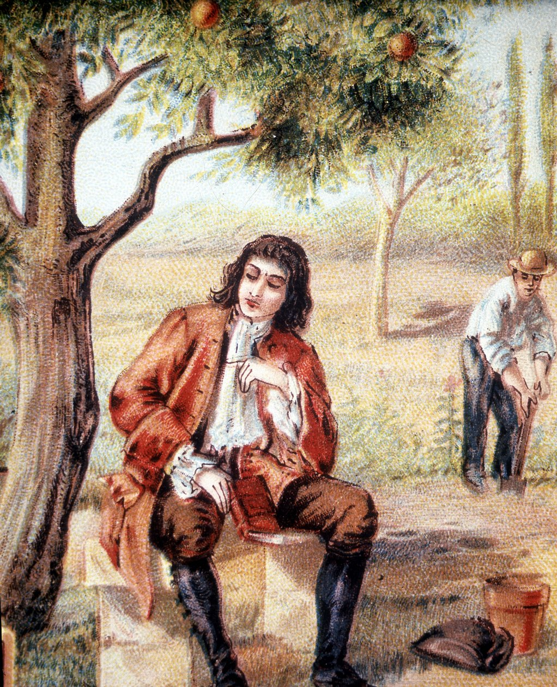

❤️200 ✏️20
Képzeljétek el, hogy ma miközben egy fa alatt ültem és gondolkodtam a fejemre esett egy alma. Bár egy kicsit fájt, de adott nekem egy gondolatot amivel rájöttem, hogy létezik gravitáció. Hiszen mivel az alma mikor leesett a fáról nem maradt ott a levegőben, hanem elkezdett lefelé esni. Az az erő ami lefelé húz mindent az a gravitáció.